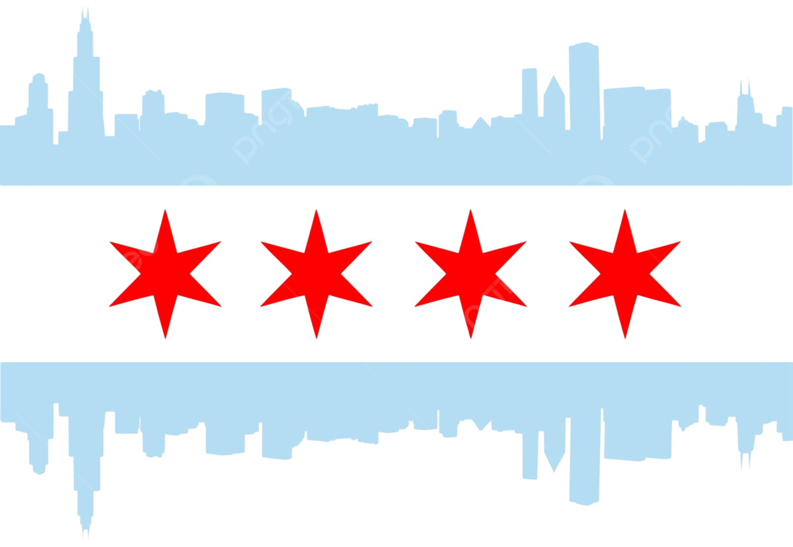

When do burglaries actually happen in Chicago? Not when most people think...
| Total Burglaries | - | |
| Peak Hour | - | |
| Safest Hour | - | |
| Worst Day | - |
For our webpage we choose to focus on the Chicago police department crime dataset, specifically the burglaries from 2001-2026. The chosen variables from this subset were time stamp, burglary type (Forcible Entry, Unlawful Entry, Home Invasion, Attempt Forcible Entry, and Burglary From Motor Vehicle), and whether an arrest was made. From the timestamp I extracted the hour, day, and year to create the heatmap and 24 hour line chart. I chose burglary specifically because it has clear patterns that make for an interesting time of day and day of week analysis unlike murder and theft which are uniformly distributed.
One visualization we implemented is a day x hour heatmap paired with a 24 hour area/line chart that are linked together through brushing. I chose a heatmap for the main view because it can show all 168 day x hour combinations (7 days x 24 hours) simultaneously, making it easier to spot patterns very easily. The alternative I considered was a series of small multiple line charts (one per day), but that made it harder to compare across days and took up much more vertical space. For the heatmap, I used a blue color scale (light gray to dark navy) that maps cells to burglary counts. After some consideration, I used a single hue ramp instead of a diverging or multi hue palette because the data only goes in one direction (zero to high), and the dark on light contrast makes the hotspots immediately visible.
The 24 hour time curve below it serves two purposes, first it gives a more precise reading of hourly totals through local and absolute minima and maxima than color alone can, and it provides the brush interaction. I used d3.brushX() so the user can click and drag to select a time window, which then dims the out of range cells in the heatmap. I considered using click to filter on individual heatmap cells instead, but brushing a continuous range felt more natural for a time axis and lets you explore windows like "what happens between 2 AM and 6 AM" in a single gesture.
The stat bar at the top provides five summary numbers such as total burglaries, peak hour, safest hour, worst day, and arrest rate that update automatically as you filter the type of burglary. I included this because the heatmap shows patterns well but makes it hard to read exact values for the reader to get the "bigger picture". Also, the stats give exact answers to the questions raised by the heatmap.
We spent roughly 12-15 hours on it in total across about a week. Firstly, the data exploration part and preparation involved writing a python script to further filter the csv data of all the burglaries from 22 columns to 4 columns that we needed for our graphs. I remember when I first deployed the project to the github.io website the data wouldn't load, then I realized that the data.csv was around 118 mb. Then, I asked a question in Piazza to which the professor had an idea to filter it down further, so I ended up writing a python script to reduce the data.csv to 4 columns. This reduced the data csv file to about 21mb, which github.io was able to successfully load from the repo.
Next, I implemented the heatmap which was the most time consuming because I had to fine tune the cell layout, color scale, and tooltip positioning to the perfect setting. Also, I ran into a lot of problems with the brushing and linking feature. Making it so d3.brushX() was able to filter the heatmap took the most debugging time. The main challenge was converting pixel coordinates back to hour values using scale.invert(), and making sure the heatmap redraws correctly when the brush is cleared. I also had to use IIFE closures inside the cell drawing loops to avoid variable scoping issues in the event handlers. In addition, understanding how D3's brush events work and getting the heatmap to update its opacity in sync with the brush selection required reading through several tutorials and Observable notebooks before I had it working reliably. The rest of the css styling and html document layout didn't take much time because I have prior web development experience.
Narrative and theme of webpage is my main argument for receiving some extra credit points. The entire theme of the webpage is Chicago themed, starting with the image of the Chicago flag and the image of the Chicago police badge. The title of "Chicago Burglary Clock" is clever because the heatmap and line chart show exactly what time of the day burglaries happen. The naming schemes for the heat map, "Prime Crime Time Grid" is catchy because it rhymes and warns the public of when the "prime time" is for burglars to commit a "crime" based on two decades of historical burglary data. Another thing is that this webpage was intentionally crafted to serve as a public announcement to residents of Chicago to warn them to stay vigilant during these hours. The website utilized a navy blue color theme, identical to the colors of the Chicago police department. Furthermore, the "Verdict: ..." annotation under the heatmap used judicial jargon to tie it into the overall police theme.